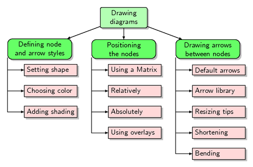
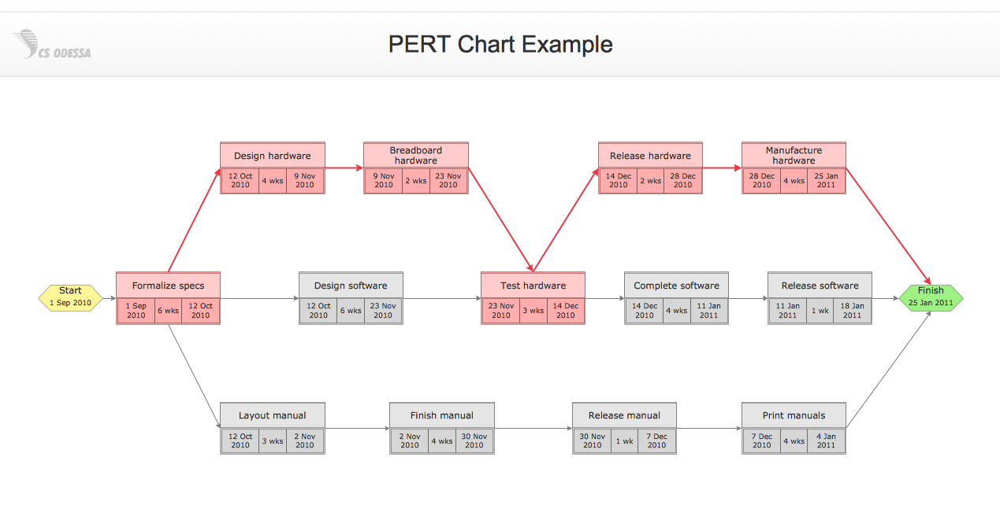

What Does This Web Application Do?
This web application allows students to plan their final
year projects. The website is can create 3 types of
graphs; Gantt charts, WBT and PERT charts.
Below is more information on these graphs.
WBT

Description : A WBT template to show the hierarchical
decomposition of work in a project
PERT

Description : A PERT chart is a graph that
represents all of the tasks necessary to a project's
completion, and the order in which they must be
completed along with the corresponding time
requirements.
GANTT

Description : A Gantt chart is one of the most
popular and useful ways of showing activities (tasks
or events) displayed against time. On the left of the
chart is a list of the activities and along the top
is a suitable time scale. Each activity is represented
by a bar; the position and length of the bar reflects
the start date, duration and end date of the activity.